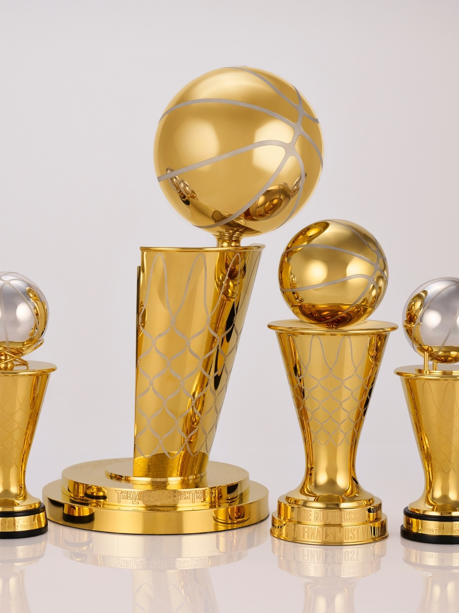
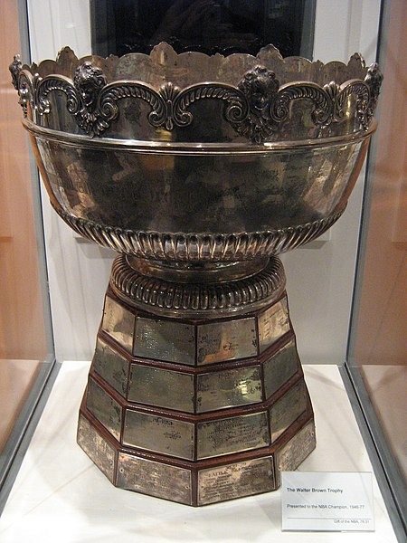

Estabelecido: 1949 O Larry O'Brien Championship Trophy é um troféu da National Basketball Association concedido ao time que vence as finais da NBA e termina campeão da temporada.
O atual troféu foi criado em 1977 substituindo o seu predecessor, "Walter A. Brown Trophy"
O Walter A. Brown Trophy

O Walter A. Brown Trophy foi um troféu concedido ao time vencedor da National Basketball Association entre as temporadas de 1949 e 1977.
Foi substituído pelo Troféu Larry O'Brien.
Menu Inicial